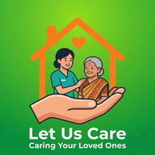

Privacy Policy
Let Us Care – Carers Near You · Last updated: 14 November 2026
In short: Let Us Care is a free, no-commission app that helps families find carers near their home. Families do not create an account, and everything a family types into a care form stays on their own phone. Carers share a few details so that families can find and contact them. We do not sell data, show ads or take payments.
1. Who we are
Let Us Care is made and run by Abode Digital Technology, Mumbai, India (Udyam registered MSME). Contact: abodedigitaltech@gmail.com · WhatsApp / phone: +91 98600 46593.
2. Information from families (people looking for care)
- No account and no sign-up. Families use the app without giving us their name or number.
- Care forms and care sheets (for example a child's food timings, an elder's medicine, emergency contacts, an optional photo) are saved only on the family's own phone. They are not sent to us or stored on our servers. A family can send a care sheet to a carer or relative by WhatsApp, share it as a picture or print it; that is the family's own choice.
- Location: if the family allows it, the phone's location is used on the phone only to show which carers are nearest. It is not sent to us or stored.
- Contact limit: to protect carers' numbers, the app counts on the phone how many carers were contacted today. This count stays on the phone.
3. Information from carers (people giving care)
When a carer registers, we store in our database (Google Firebase, Cloud Firestore):
- Name, mobile number (also their WhatsApp number), gender, the care services they offer, and an optional photo.
- The approximate location of the carer's phone at registration, used to show families how far away the carer is. The exact location and address are never shown to families; families see only the distance in km.
- Optional profile details the carer chooses to add: age, skills, certificates, experience, working days and times, travel distance, household work, rate, languages, area name, references, an emergency contact, whether they hold a police verification certificate, and a short note about themselves.
- Whether the carer is available for work, when they last opened the app, and their approval and number-verification status.
What families can see: after we approve a carer, families can see the carer's name, photo, services, skills, experience, languages, rate, availability, verification badge, last-seen time and distance, and can call or WhatsApp the carer from the app. References and the carer's emergency contact are not shown to families.
Number verification: a carer verifies their number by sending us a WhatsApp message from the same number. We use this only to confirm the number. Let Us Care checks only the mobile number; families should check a carer's original ID and police verification certificate themselves before hiring.
4. How we use information
- To show carers to families nearby, and to let families contact them.
- To review, approve, verify, hide or remove carer profiles and keep the service safe.
- To contact a carer about their registration.
We do not use the information for advertising and we do not sell or rent it to anyone.
5. Services we use
- Google Firebase (Cloud Firestore database and anonymous sign-in for carers), operated by Google. See Firebase privacy information.
- GitHub Pages to host the app.
- WhatsApp and your phone dialler open when you tap WhatsApp or Call. Messages and calls are then handled by those apps under their own policies.
6. Payments
Let Us Care takes no money. Families and carers agree on work and payment directly between themselves. We are not a party to that agreement.
7. How long we keep data and how to delete it
- Carers can switch themselves to "Not available" at any time. To delete a carer profile completely, message us on WhatsApp or email us from or about the registered number; we will delete it, normally within 7 days.
- We may hide or delete profiles that are inactive, fake or reported.
- Families can delete everything the app saved on their phone by clearing the app's data or storage in phone settings, or by uninstalling the app.
8. Security
Data is sent over secure HTTPS connections. Database rules allow a carer to change only their own profile, and only our admin can approve, verify or hide carers. No method of storage is 100% secure, but we take reasonable care to protect it.
9. Children
The app is meant for adults. Carers must be 18 or older. Details about a child entered in a family's care form stay only on that family's phone.
10. Changes to this policy
If we change this policy we will update this page and the date at the top.
11. Contact
Abode Digital Technology, Mumbai, India
Email: abodedigitaltech@gmail.com
WhatsApp / phone: +91 98600 46593